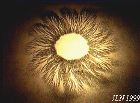

The Magnetic Moebius Tripole, a very simple
experiment.
The Magnetic Moebius Tripole, a very simple
experiment.


Aether Tensile Stress, B-Field Torsion, Axion (spin) Field
created on 01-17-99 - JLN Labs - last update on 08-29-01
You will find in this topic some
personal and speculative
thinkings, based on my experimental approach and personal
readings about some means and methods for generating a "dynamic
tensile stress" on the Aether by using the B-Field Torsion
effect. The purpose is to use this effect for tapping Free Energy
and/or generating space propulsion devices. Now, I think that it
is possible to use induced vortexes in the Ather for tapping free
energy and also to generate spacetime distortion effect (torsion
fields) for inducing antigravitational thrust. I shall try to
adopt an experimental approach, so all ideas will be checked by
experiments and testings....
All suggestions and ideas are always welcome....
Jean-Louis Naudin, January 17th 1999
 The Magnetic Moebius Tripole, a very simple
experiment.
The Magnetic Moebius Tripole, a very simple
experiment.
 Does the B-Field
Torsion generator generate a magnetic
vortex ?
Does the B-Field
Torsion generator generate a magnetic
vortex ?
 Some magnetic field
pictures of the B-Field Torsion generator
Some magnetic field
pictures of the B-Field Torsion generator
 The Dual Vortex Generator, towards Free Energy ?
The Dual Vortex Generator, towards Free Energy ?
 The Dual Vortex Engines SpaceCraft, warping to deep space
?
The Dual Vortex Engines SpaceCraft, warping to deep space
?

 A simple Time Shifting Detector
A simple Time Shifting Detector

 Generators of
Axion (Spin) Field by Alexander A.Shpilman
Generators of
Axion (Spin) Field by Alexander A.Shpilman
 The Vortex Lab
The Vortex Lab
 Some real magnetic
spectrum pictures
Some real magnetic
spectrum pictures
 Email : JNaudin509@aol.com
Email : JNaudin509@aol.com
Return to the JLN Labs home page